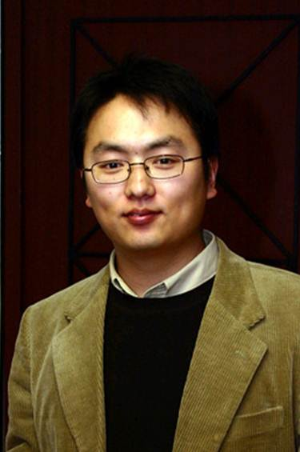

SangUk Han, PhD
Professor · Department Chair
Construction Engineering and Management
Department of Civil and Environmental Engineering
Hanyang University
222 Wangsimni-ro, Seongdong-gu
Seoul, S. Korea 04763
Academic Positions
- Professor, Dept of Civil and Environmental Eng, Hanyang University, Korea, 2025–present
- Associate Professor, Dept of Civil and Environmental Eng, Hanyang University, Korea, 2020–2025
- Assistant Professor, Dept of Civil and Environmental Eng, Hanyang University, Korea, 2016–2020
- Assistant Professor, Dept of Civil and Environmental Eng, University of Alberta, Canada, 2013–2016
Education
- Doctor of Philosophy, Civil Engineering (Construction Management), University of Illinois at Urbana-Champaign, IL, USA, 2013
- Master of Science, Computer Science (Vision and Graphics), Columbia University, NY, USA, 2012
- Master of Science, Civil Engineering (Information Technology), University of Illinois at Urbana-Champaign, IL, USA, 2009
- Bachelor of Science, Civil Engineering, Hanyang University, Seoul, Korea, 2005
Awards, Honors & Recognition
- 2023 Outstanding Paper Award, Journal of KIBIM, 2023
- HY Researcher of the Month (June 2022, November 2023), Hanyang University
- 2014, 2016, 2017 & 2022 Outstanding Reviewer, ASCE Journal of Computing in Civil Engineering
- Outstanding Conference Poster Paper Award, 2022 KSARC Convention Conference
- Best Teacher Award, Hanyang University, 2022
- Outstanding Conference Award, 2021 KICS Annual Conference
- 2020 Outstanding Paper Award, Korean Journal of Construction Engineering and Management
- 2016 & 2019 Outstanding Reviewer, ASCE Journal of Construction Engineering and Management
- Outstanding Teacher Award, Hanyang University, 2019
- 2018 Jang, Won-Suk Special Award, KICEM, 2018
- Outstanding Conference Paper Award, 2017 KICEM Annual Conference
- 2014 Best Paper Award, ASCE Journal of Computing in Civil Engineering, 2015
- Best Conference Paper Award, 2012 ASCE IWCCE
- Travel Grant Award, 12th CONVR, National Taiwan University, 2012
- Travel Grant Award, 2012 ASCE Construction Research Congress (sponsored by KACEPMA)
- Scholarships, Department of Civil Engineering, Hanyang University, 2002 & 2004
Selected Service Activities
- Associate Editor, KSCE Journal of Civil Engineering, 2023–present
- Editor-in-chief, KSARC Journal of Construction Automation and Robotics, 2022–2023
- Assistant Specialty Editor, ASCE Journal of Construction Engineering and Management, 2015–present
- Reviewer, Automation in Construction, Elsevier, 2014–present
- Reviewer, ASCE Journal of Computing in Civil Engineering, 2013–present
- Reviewer, ASCE Journal of Construction Engineering and Management, 2012–present
- Board Member, Korean Society of Automation and Robotics in Construction (KSARC), 2024–2025
- Board Member, Korean Institute of Building Information Modeling, 2019–2020
- Organizing & Technical Committee Co-chair, CONVR 2015, Banff, Canada
- Member, Central Construction Technology Committee, Ministry of Land, Infrastructure and Transport, 2024
- Member, Technical Advisory Committee, Gyeonggi Housing and Urban Development Corporation, 2021–2022
- Member, Public-Private Partnership Project Evaluation Committee, Seoul Metropolitan Government, 2019–2022
- Member, Technical Advisory Committee, Korea Rail Network Authority, 2018–2020
- Member, Technology Review and Evaluation Committee, Korea Land and Housing Corporation, 2018–2020, 2024–2025
- Member, Plant Education Advisory Committee, Korea Plant Industries Association, 2018–2020
Short Biography
Dr. Han is a Professor in the Department of Civil and Environmental Engineering at Hanyang University. He earned MS and PhD degrees in Civil Engineering from the University of Illinois at Urbana-Champaign in 2009 and 2013, and a MS degree in Computer Science from Columbia University in 2012. He joined Hanyang University in September 2016, after serving as a faculty member at the University of Alberta, Canada.
His research interests include construction automation and informatics for computer-aided decision making — spanning mixed reality (VR/AR) for quality inspection, digital twin technology for resource management, motion data-driven simulation for ergonomic analysis, data mining for proactive accident prevention, and high-dimensional spatial data processing for GIS analysis.
He is a member of the American Society of Civil Engineers and serves as an assistant specialty editor of the ASCE Journal of Construction Engineering and Management and as a reviewer for several international journals.